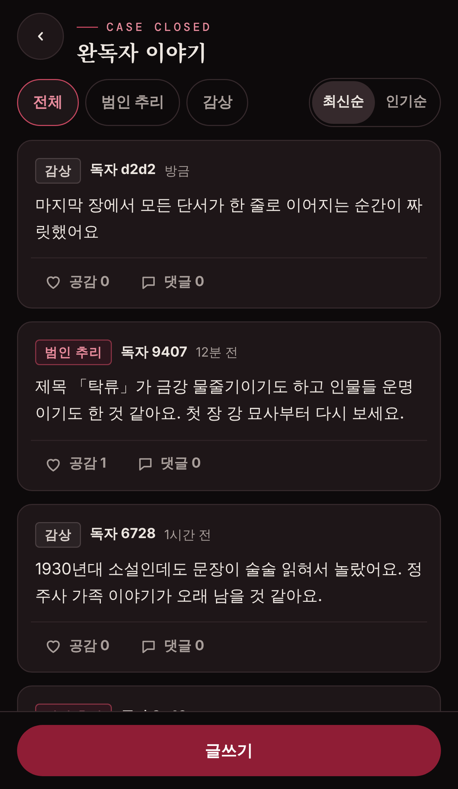

배치는 시안 2(인스타그램)와 같습니다. 닉네임 뒤에 내용이 이어지고, 아래에 시간·좋아요·답글 달기, 오른쪽에 하트가 있고, 답글은 "답글 N개 모두 보기"로 펼칩니다. 색과 글꼴은 RE:ADD 밤 화면을 따랐습니다. 밤 서재 같은 검붉은 바탕, 제목과 숫자는 명조, 강조는 버건디입니다. 위쪽에 최신순·인기순 버튼을 넣었고, 첫 번째 화면에서는 실제로 눌러서 순서가 바뀌는 것을 볼 수 있습니다.
밤샘독서마지막 장 읽고 첫 장을 다시 펼쳤어요
달빛서재초봉이 군산을 떠나는 장면에서 한참 멈춰 있었어요. 강물 묘사가 인물들 처지랑 겹쳐 보여요
추리하는고양이태수가 처음 나올 때부터 수상했는데 결국 그렇게 될 줄은 몰랐네요
정독파1930년대 소설인데도 문장이 술술 읽혀서 놀랐어요
달빛서재초봉이 군산을 떠나는 장면에서 한참 멈춰 있었어요. 강물 묘사가 인물들 처지랑 겹쳐 보여요
추리하는고양이태수가 처음 나올 때부터 수상했는데 결국 그렇게 될 줄은 몰랐네요
정독파1930년대 소설인데도 문장이 술술 읽혀서 놀랐어요
미두장단골정 주사 가족 이야기가 오래 남을 것 같아요
숫자 "24"와 책 제목은 명조로 크게, 고른 순서 버튼은 버건디로 채웁니다. 프로필은 닉네임 첫 글자를 명조로 넣은 동그라미입니다.

말머리 탭, 큰 카드, 영어 장식 글씨, 화면 아래를 덮는 글쓰기 막대.
달빛서재초봉이 군산을 떠나는 장면에서 한참 멈춰 있었어요. 강물 묘사가 인물들 처지랑 겹쳐 보여요
책벌레@달빛서재 저도요. 첫 장 강 묘사부터 다시 읽고 싶어졌어요
밤샘독서@책벌레 마지막 장이랑 첫 장이 이어지는 느낌이죠?
달빛서재글쓴이@밤샘독서 네, 그래서 더 오래 남는 것 같아요
정독파@달빛서재 군산 부두 장면 저도 기억나요
답글은 한 칸 들여쓰기, 모두 '@닉네임'으로 시작하고 @닉네임은 밝은 버건디. 처음 댓글 쓴 사람의 답글에는 버건디 테두리 '글쓴이' 표시.
달빛서재초봉이 군산을 떠나는 장면에서 한참 멈춰 있었어요. 강물 묘사가 인물들 처지랑 겹쳐 보여요
책벌레@달빛서재 저도요. 첫 장 강 묘사부터 다시 읽고 싶어졌어요
밤샘독서@책벌레 마지막 장이랑 첫 장이 이어지는 느낌이죠?
답할 답글에 버건디 띠가 생기고, 입력창 위에 누구에게 답하는지 한 줄. ✕를 누르면 새 댓글로 바뀝니다.
명조 큰따옴표와 두 줄 문장, 아래 입력창 하나뿐입니다. 버튼은 따로 두지 않습니다.